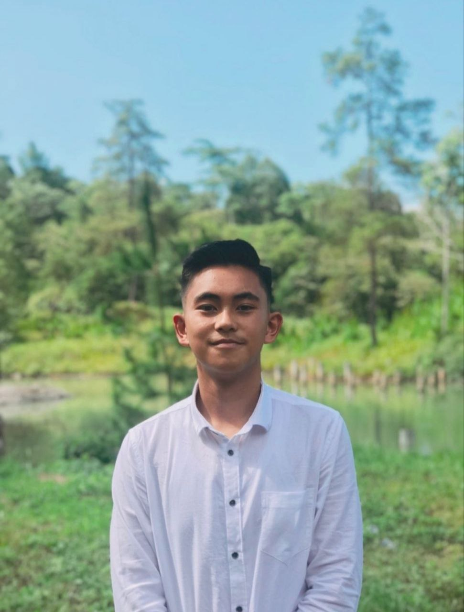

Tentang Saya
Perkenalkan nama saya Aldy Paskah Sekeon biasa dipanggil Aldy, saya adalah Mahasiswa semester 5 dari Universitas Negeri Manado. Saya sekarang sedang mengikuti kegiatan kampus merdeka batch 3 dan terdaftar di Social Economic Accelerator Lab (SEAL) .
Keahlian Saya
Pendidikan
Kontak Saya
Facebook || Twitter || Instagram || Portofolio